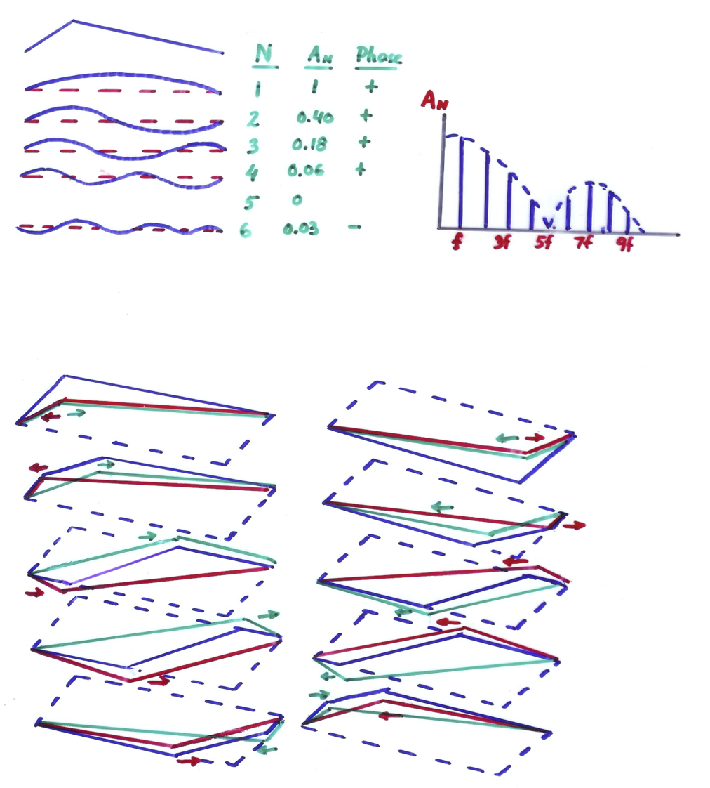

Acoustics - String Instruments
sara.martin@ntnu.no
Sound Radiation of musical Instruments
The directivity pattern of a musical instrument might:- have one or several strong directions
- depend FREQUENCY of sound
- be OMNIDIRECTIONAL for Low Frequencies
Room Acoustics:
$$L_p = L_W + 10log(\frac{Q}{4\pi r^2} + \frac{4}{A})$$
$L_p =$ sound pressure level, in dB
$L_w =$ sound power level, in dB
$Q =$ directivity factor (DF) of the sound source
$r =$ distance from the sound source, in m
$A =$ Total absorpotion area, in $m^2$
$L_w =$ sound power level, in dB
$Q =$ directivity factor (DF) of the sound source
$r =$ distance from the sound source, in m
$A =$ Total absorpotion area, in $m^2$
String Instruments: GENERATION Of Sound
- Vibrations generated in tensioned strings
- Vibrations get a very strong amplitude for harmonically distributed frequencies

String Instruments: GENERATION Of Sound
A vibrating string RADIATES HARDLY any sound:
- the string is very thin
- the string acts as a dipole
String Instruments: GENERATION Of Sound
String Instruments: GENERATION Of Sound
String Instruments: GENERATION Of Sound
Resonance frequencies: $$f_n = n\cdot f_1, \qquad f_1 = \displaystyle{\frac{Wave.Vel.}{2L}=\frac{\sqrt{\frac{T}{m/L}}}{2L}}$$ where $f_1$ = fundamental Frequency [Hz]$T$ = tension of the string [N]
$L$ = length of the string [m]
$m$ = mass of the string [kg]
Vibrations of a plucked string
String plucked at its midpoint
Vibrations of a plucked string
String plucked at 1/5 of its length from the bridge
Vibrations of a Bowed string
Stick-slip action of bow on string:Vibrations of a Bowed string
Vibrations of a Bowed string
Driving force at the bridge:String Instruments: RADIATION Of Sound
- Vibrations (strings)$$\downarrow$$ Forces (bridge) $$\downarrow$$ Vibrations (body)
- Amplification:
- Wooden plates
- Inside the box
String Instruments: VIBRATION PATTERNS
1- Modes inside the cavity: $A_0$, $A_1$, $A_2$,...String Instruments: VIBRATION PATTERNS
2- Modes of the back and top plates:String Instruments: ADMITTANCE
Input admittance: vibration velocity when excitation force is constant at each frequencyString Instruments: ADMITTANCE
Input admittance at 2 different points:Bass Bar & Soundpost
String Instruments: ADMITTANCE and SPL
What is the relationship between the Sound Pressure Level (SPL) and Input Admittance
String Instruments:
GENERATION & AMPLIFICATION
String Instruments: RADIATION of sound
Main direction of radiation in the horizontal plane [Meyer, 1972]- Lower tones: Omnidirectional
- 1-1.5kHz: directional, Forward
- High tones: wider radiation
String Instruments: RADIATION of sound
Arrangement of violins of a Symphony Orchestra:
American Placement
(both left)
(both left)
German Placement
(left-right)
(left-right)
String Instruments: RADIATION of sound
The cello is not a scaled-version of the violin!- Lower tones: Omnidirectional
- 1-1.5kHz: directional, Forward
- High tones: wider radiation